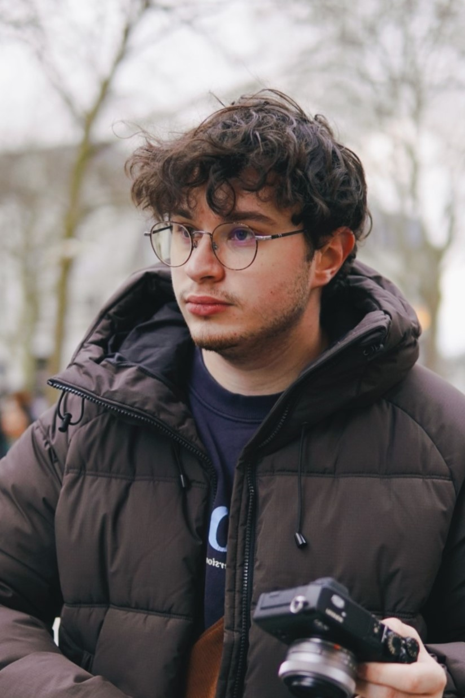

Hi, I'm Tom. I'm 20 and I'm a photographer, videographer, director of photography, sketch artist, musician, web and game developer. So, as you can see: I love art.
I've always been attracted to art in general. My dad was a painter so I discovered art at an early age. I started drawing little sketches of my hobbies, or characters of my favorite games at the time.
Then I got my first ever instrument: the drums. I remember wanting to learn every Twenty One Pilots songs. Then came the bass, guitar, and the piano.
So when did I start photography ? Well, my parents had a camescope and a reflex camera. And I think seeing them record everything inspired me to do the same.
So around 2021 I picked up my dad's Pentax K-r and started documenting my life. I'd take it to school, and everywhere I'd go. Now of course I didn't know a lot on how to properly expose an image. I was always shooting on Auto or Program Mode.
I even thought the motion blur was caused by increasing the ISO. It wasn't until I got intrested in film photography that I'd learn the Triangle of Exposure. So I got my first film camera: a Ricoh 35 ZF. I learn about ISO, Shutter Speed, and Aperture and what each of them did to the image.
In the meantime, I got a lot of new DSLR and film cameras. I even got a Sony a7ii, my first ever mirrorless camera, and started to record videos of everything.
I also got accepted to film school, and started learning about film-making.
In 2026, I wanted to buy a smaller camera. The sony was great but too bulky. I didn't want to walk with a brick in my hands every time I took it out.
So I bought a Fujifilm X-E1 with a small prime lens. And that's when I really started photography. I took it with me EVERY DAY since I could literally keep it in my pocket at all time.
Now, I do street, urban, flash, and portrait photography. I've made little zines, go check them out!
